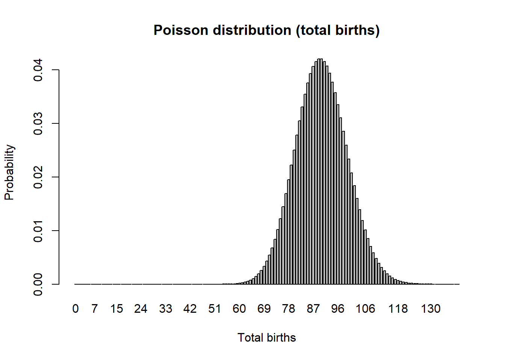
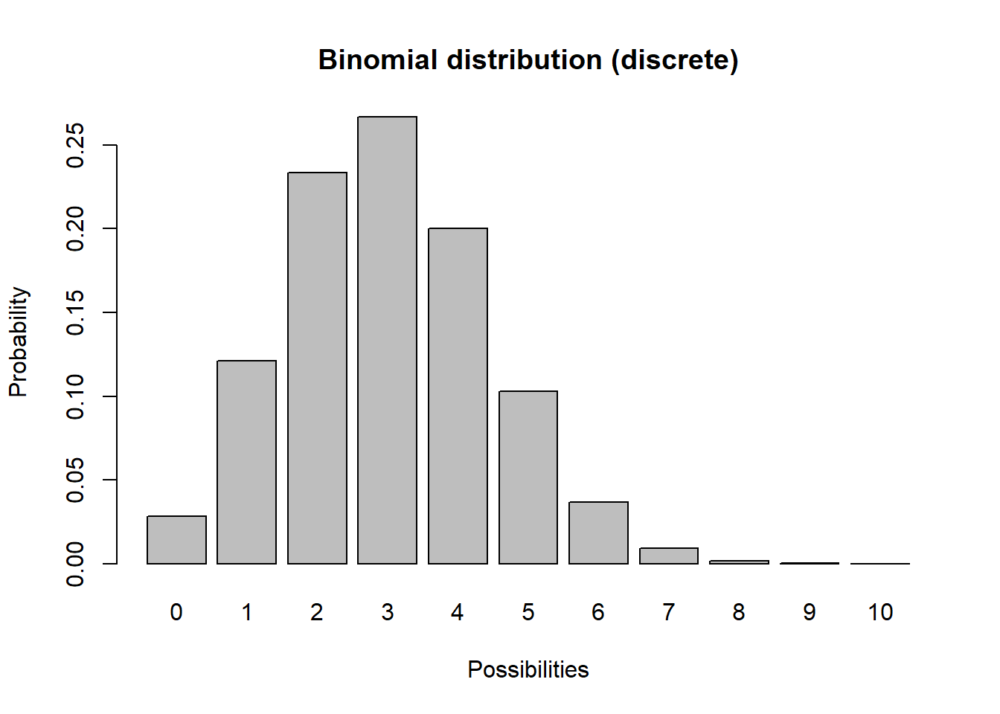

PVA Short Course, lecture #1
NRES 421/621
Spring 2023
Population Viability Analysis (PVA)
In this short course, we will explore the use of population models to address conservation questions– a process often called population viability analysis (PVA)
PVA is a set of practical approaches to problem-solving in conservation and wildlife management via creative application of population ecology theory, simulation models and statistics.
We will use InsightMaker- a free web-based systems modeling tool for running hands-on simulation models.
First we will run through the basics of population modeling for wildlife conservation…
Second, we will run through a case study of the use of population models to support the conservation and management of the Rufa Red Knot (Calidris canutus rufa) and the Horseshoe Crab (Limulus polyphemus), whose eggs provide a key source of food for migrating Red Knots.
Let’s review some basic population ecology theory and mathematics which are the foundation of PVA!
What is a population?
From Charles Krebs (1972):
“A group of organisms of the same species occupying a particular space at a particular time, with the potential to breed with each other”
Defining a population is not always straightforward…. Spatial boundaries defining populations sometimes are easily defined, but other times are vague and difficult to determine. Where does one population begin and another one end?
How do populations change over time?
Exponential growth: the fundamental principle of population ecology
Populations of living things have the ability to grow exponentially. This is the “power of life”.


The takeaway? With sufficient resources (e.g., plenty of food, shelter, nest sites, etc.), populations grow in a positive feedback loop. More individuals in the population means greater potential for population growth (e.g., making more babies!), which means more individuals enter the population, which means EVEN GREATER potential for population growth.
Modeling!!
Systems thinking
Modern computers have reduced or eliminated many of the barriers to understanding how complex systems behave, and as a result specialized software and computer programming are a critical component to modern ecosystem studies and conservation biology, which deal with understanding complex systems.
Armed with basic facility with computer programming, ecologists and natural resource professionals can formalize their understanding of the natural systems in which they work, building models that account for complex ecological realities.
In addition, we can run experiments, or scenario tests using these models, asking questions that wouldn’t otherwise be addressable through science. In this short-course, we will use computer simulations for understanding and performing scenario tests with natural populations.
InsightMaker: a simulation modeling framework for dynamic systems!
InsightMaker is a web-based visual programming language for modeling the dynamics of inter-connected systems.
Any dynamic system (like a wildlife population) essentially consists of [Stocks] and [Flows].
A [Stock] simply represents a quantity of something. The [Stock] changes over time ONLY via [Flows In] or [Flows Out].
A [Stock] of stuff increases over time via what [Flows] in. Imagine our stock represents Moose!
Moose Births would then be the input [Flow] to the population of Moose over time.
A [Stock] of stuff decreases over time via what [Flows] out. For example, Moose Deaths could represent the [Flow] out of the population of Moose.

If the [Flow] into the stock is larger than the [Flow] out of the stock, then the [Stock] increases over time.
If the [Flow] out is larger than the [Flow] in, then the [Stock] decreases over time.
If the [Flow] in equals the [Flow] out then the amount in the [Stock] will not change over time. In this case, the system is in equilibrium.
A basic simulation model
It is often stated that “all models are wrong, some are useful” (attributed to statistician George Box).
This demonstration model is wrong, and not super useful! But it’s a start!
Simple stock and flow model!
Open up InsightMaker. If you have never used it before you need to sign up first with a username and password. InsightMaker is free!
Click on this link to load up the first population modeling demo.
In the upper right-hand corner of the screen, click on the “Clone Insight” link at the top and click on the “Clone” button on the following screen (so you can make edits to this model!). If you want, you can change the name of the model by clicking on the white space anywhere in the workspace and then clicking the “Edit Info” button on the left-hand context menu.
Now click Run Simulation. You have run your first population simulation!
Q: What is the first thing you would like to change to make the model more realistic?
A more realistic model: exponential growth!
Now let’s assume that per-capita birth and death rates in the population are constant across time. This way, if the population is bigger, more individuals will be added to the population – a positive feedback!
Click on this link to load up the next population modeling demonstration.
In the upper right-hand corner of the screen, click on the “Clone Insight” link at the top and click on the “Clone” button on the following screen (so you can make edits to this model!). If you want, you can change the name of the model by clicking on the whitespace anywhere in your InsightMaker workspace and then clicking the “Edit Info” button on the left-hand context menu.
Your model should look something like this:

Click on the two [Flows] (Births and Deaths) and note the equation displayed on the right-hand menu. Do these equations make sense?
Make sure the initial number of moose is set to 50, the birth rate is set to 0.5, and the death rate is set to 0.4. Now click [Run Simulation]. How would you describe the results?
Q: what happens if you set the birth rate equal to the death rate?
Q: what happens if you set the birth rate less than the death rate?
One of the most fundamental quantities in population ecology is called the “intrinsic rate of growth”, or r. R is simply the difference between birth and death rate:
\(r=birth\ rate-death\ rate\)
Q: What is the intrinsic rate of growth for this population (when birth rate is set to 0.5 and the death rate is set to 0.4)?
Q: What is the next thing you would like to change to make the model more realistic?
An even more realistic model!!
Which one of these figures is most likely to be from a real wildlife population??

OR

Wildlife populations fluctuate over time!
… And these fluctuations are often difficult to predict!
That is to say…
The future is uncertain!
All ecological systems are full of uncertainty. We all know it intuitively. But what exactly do we mean by that? And how can we deal with it? How can we incorporate it into our models?
Q: if you were to re-run the basic population model you just made in InsightMaker ten times, how many different results would you get?
When a model outcome is the same every time (when starting with the same input values) we say that the model is deterministic.
BUT… ecological systems (e.g., dynamic populations) have inherent variability.
We can’t predict with certainty whether or not an individual will mate, or die.
We can’t be certain whether next year or the year after that will be a good year or a bad year for offspring production or mortality!
The key is to embrace uncertainty. As population ecologists, we have some tricks to help us manage and account for unpredictable variation in our study systems:

How to model uncertainty
Typically, we ‘embrace uncertainty’ in our models by incorporating random-number generators. These types of simulation models are called stochastic models.
When we incorporate random processes into models, the result will be different each time we run the model!
When we use stochastic models, we often want to run lots of replicates. Each replicate represents a possible future.
We can then interpret the cloud of possible futures rather than just the results from a single model run!

Here we see that the population went extinct three times out of a total of 50 replicates.
Random number generation
To ensure that each model run (replicate) – or each year of each model run – is different from one another, we need to include at least one random number generator in our models!
A random number generator is like a box of (potentially infinite) possible numbers – a lottery ball machine for example! Each time we want a new number we reach in and pull one out randomly, record the number, put it back in and shake it up again.

Return to InsightMaker- add randomness!
The term stochasticity just means randomness. A stochastic population model is a model with one or more random number generators included!
Click on this link to load up the next population modeling demonstration.
In the upper right-hand corner of the screen, click on the “Clone Insight” link at the top and click on the “Clone” button on the following screen (so you can make edits to this model!). If you want, you can change the name of the model by clicking on the whitespace anywhere in your InsightMaker workspace and then clicking the “Edit Info” button on the left-hand context menu.
Make sure the Birth rate is set to 0.5 and Death rate is set to 0.4. Set initial abundance to 10. Under the “Settings” menu make sure the model is set to run for 20 years.
Run the simulation. What does it look like?
Use the “Sensitivity Testing” tool (in the “Tools” menu, upper right corner) to run the model 100 times. Choose your [Population] (Moose) as the “Monitored Primitive”. View the results!
Now, please change the initial abundance to 500 and re-run the “Sensitivity Testing” tool.
Q: what key differences do you notice when you initialize the population with 10 individuals vs 500 individuals??
Case study: Red Knots and Horseshoe Crabs
And finally, some optional extra materials!
Add Environmental Stochasticity
Environmental stochasticity refers to the fact that we can’t predict whether next year or the year after will be a “good year” (high per-capita birth rates, low percent death rate) or a “bad year”. Since we can’t predict this with certainty, we use random number generators to make stochastic predictions and we run multiple replicates of our model to better understand the range of possible futures given our uncertainty.
Click on this link to load up the next population modeling demonstration.
In the upper right-hand corner of the screen, click on the “Clone Insight” link at the top and click on the “Clone” button on the following screen (so you can make edits to this model!). If you want, you can change the name of the model by clicking on the whitespace anywhere in your InsightMaker workspace and then clicking the “Edit Info” button on the left-hand context menu.
Set initial abundance to 10. Under the “Settings” menu set the model to run for 20 years.
Use the “Sensitivity Testing” tool (in the “Tools” menu, upper right corner) to run the model multiple times. Choose [Population] as the “Monitored Primitive”.
Change the initial abundance to 500 and re-run the “Sensitivity Testing” tool.
Aside: Mathematics and modeling in Ecology

“Like most mathematicians, he takes the hopeful biologist to the edge
of the pond, points out that a good swim will help his work, and then
pushes him in and leaves him to drown”
- Charles Elton (referring to a work by Alfred Lotka)
“The importance of the method is this: if we know certain variables,
mostly desired by ecologists and in some cases already determined by
them, we can predict certain results which would not normally be
predictable or even expected by ecologists. The stage of verification of
these mathematical predictions has hardly begun; but their importance
cannot be under-estimated.”
- Charles Elton (also referring to a work by Alfred Lotka)
Nomenclature for Population Ecology
First of all, \(N\) represents population size, or abundance.
\(\Delta N\) represents the change in population size, \({N_{t+1}}-{N_t}\)
The famous “BIDE” equation is a way to break down \(\Delta N\) into components.

\(\Delta N = B + I - D - E \qquad \text{(Eq. 1)}\)
where \(B\) represents the total number of births per time period, \(I\) reprents the number of immigrants, \(D\) represents the number of deaths, and \(E\) represents the number of emigrants.
If we ignore immigration and emigration, then the BIDE equation simplifies to:
\(\Delta N = B - D \qquad \text{(Eq. 2)}\) (the “buh-duh” equation?)
Now let’s focus on \(B\) and \(D\). The important thing to recognize is that the total number of births and deaths (B and D) in a population is not constant – they both depend on the population size!
What about the per capita rates of births and deaths in a population? Is this more likely to be constant across a range of population sizes?
These per capita rates are often expressed as lower case letters. So \(b\) (little b) represents per capita births, and \(d\) (little d) represents per capita deaths.
\(b = \frac {B_t}{N_t} \qquad \text{(Eq. 3)}\)
–or–
\(B_t = b \cdot N_t\)
The letter \(t\) of course represents time, which ofen denotes years.
In plain English, the above equation could be described as follows: “the number of births at a given time is equal to the per-capita birth rate times the total population size at that time”. (literally, per capita means “by heads” in Latin. So we multiply the birth rate “per head” by the total number of heads!).
Similarly,
\(D_t = d \cdot N_t \qquad \text{(Eq. 4)}\)
If \(\Delta N = B - D \qquad \text{(Eq. 5)}\)
then
\(\Delta N = b \cdot N_t - d \cdot N_t\qquad \text{(Eq. 6)}\)
which is equal to
\(\Delta N = (b - d) \cdot N_t \qquad \text{(Eq. 7)}\)
which could also be written:
\(\Delta N = r \cdot N_t\qquad \text{(Eq. 8)}\)
Where \(r\) represents the difference between births and deaths. If \(r\) is positive, then births are greater than deaths and the population grows. If \(r\) is negative then deaths exceed births and the population declines.
Discrete population growth (most PVAs)
Most PVAs represent discrete population growth models, where population growth occurs at regular intervals (often modeled as one growth event per year): for a growing population, the population size is constant until the next year, at which point it grows in one leap.
Q: What wild populations exhibit discrete population growth?
The greek symbol lambda (\(\lambda\)), represents the finite rate of growth for a discrete population growth model, or \(\frac {N_{t+1}}{N_t}\). Lambda is what you multiply the current population size by to compute the population size in the next time step.
\(N_{t+1}=N_t + \Delta N_t \qquad \text{(Eq. 9)}\)
\(N_{t+1}=N_t + r_d \cdot N_t \qquad \text{(Eq. 10)}\)
\(N_{t+1}=N_t \cdot (1 + r_d) \qquad \text{(Eq. 11)}\)
\(N_{t+1}=\lambda \cdot N_t \qquad \text{(Eq. 12)}\)
\(N_{t}=\lambda^{t} \cdot N_0 \qquad \text{(Eq. 13)}\)
Q: Why do most population models ignore males??
Continuous population growth
Most PVA models involve discrete population growth (growth occurrs at discrete points in time, e.g., once each year).
In a continuous population growth model, the population is constantly changing: for a growing population, no matter how small the time interval, the population will be bigger at the next time step.
Q: What wild populations exhibit continuous growth?
We can use calculus notation to consider the instantaneous change in population size:
\(\frac{\partial N}{\partial t} = r \cdot N \qquad \text{(Eq. 9)}\)
This simple formula represents continuous exponential growth.
To estimate the abundance at time t, we can integrate this differential equation, and we get the following result:
\(N_t = N_0 e^{rt} \qquad \text{(Eq. 10)}\)
Getting started with InsightMaker
Here are instructions for constructing the first InsightMaker model from today’s lecture
Open up InsightMaker. If you have never used it before you need to sign up first with a username and password. InsightMaker is free!
Create a new “Insight” and clear the demo module.
Right click in the center of the screen and select Create Stock from the pop-up. Notice that the name is New Stock and is selected. Type in a name for what this is an accumulation of (e.g., “Moose”!). Note the Configuration Panel on the right - where you can alter the settings for your [Stock]. In the configuration panel, set the Initial Value to 50. That is, there will be 50 moose at the start of the simulation!
Select [Flow] in the upper left corner of your screen under [Connections]. Now notice that when you mouse over the [Stock] a small right-arrow displays. Click on the right-arrow and drag a couple inches to the left of the [Stock] and release. This is how you create a [Flow] out of a [Stock]. To create a [Flow] into a [Stock] click the Reverse button in the Connections menu. Please do that now. You can name the [Flow] “Births”. Also in the Configuration Panel set Flow Rate equal to 1.
Now click Run Simulation and you have just finished your first simulation model!!
Can you figure out how to change the settings to run the model for 50 years? Try this and click Run Simulation.
Use the same methods as step 4 to create a [Flow Out], representing moose deaths. Set the death rate to 1 moose per year. Re-run the model. Is the population increasing or declining? Why?
And the second model (basic exponential growth)
To create variables to store per-capita vital rates (per-capita birth and death rates), right-click on the canvas and select Variable from the drop-down. While the [Variable] is still selected rename it (per-capita) birth rate. Open the [Equation] window for birth rate and set it to 0.5 (if you mouse over Stock or Flow a small [\(=\) Sign] will appear. If you click this it will open the Equation window where you can set values or enter more complex equations.
Now draw a [Link] from birth rate to the “Births” [Flow]. In InsightMaker, flow of information is represented by a [Link]. To create a [Link], click Link in the Connections part of the toolbar. When you mouse over the birth rate click on the right-arrow, drag to the [Flow] and release. You now have a [Link] on top of the [Flow]. Now hold the Shift Key and click in the middle of the [Link] and a little little green node will be created on the [Link]. You can select this node and drag it to make a visually pleasing curved line!
Repeat step 10 for the the death rate variable.
Your model should look something like this:
- Open the Equation editor window for the [Flow] and set it to [Moose] times [birth rate]. To make sure you don’t make any typing errors, it’s best to add variables to your equation by clicking on the variable names in the right-hand panel of the equation editor. The equation in the equation editor window should look like this:
[Moose]*[Birth rate]That is, the rate of inflow into the [Moose] stock is equal to the total number of moose multiplied by the per-capita birth rate.
Do the same for the outflow into the [Moose] stock (Deaths).
- Make sure the number of moose is set to 50, the birth rate is set to 0.5, and the death rate is set to 0.4. Now click [Run Simulation]. How would you describe the results?
Every random-number generator has a distribution. This is a way of defining what exactly is in the box.
For example, the box might have 10 “ones”, 5 “twos”, and 2 “threes”. In this case the distribution looks like this (probability of each possibility):
box <- c(rep(1,10),rep(2,5),rep(3,2))
barplot(table(box)/sum(table(box)),ylab="probability",xlab="possibility")A probability distribution can be pretty much anything you want it to be. However, there are several key families of distributions that come up again and again in modeling (and in nature), and are often major building blocks of PVA!
These distributions are: the binomial distribution for modeling the total number of deaths, the Poisson distribution for modeling the total number of births, and the Normal distribution for modeling variation in per-capita vital rates (e.g., percent death rate).
Binomial random number generator (for modeling total deaths)
Imagine you flip a coin 10 times and count up the number of heads. Then you repeat this “experiment” over and over again. Your results should follow a binomial distribution!

Poisson random number generator (for modeling total births)
Another discrete distribution we will use in this PVA short-course is the *Poisson distribution. This distribution has a lower bound of 0 and an upper bound of \(\infty\), and is great for modeling the total number of new individuals entering a population each year (births).

Normal distribution (variability in per-capita vital rates)
You are probably already familiar with the Normal distribution. This distribution has a lower bound of \(-\infty\) and an upper bound of \(\infty\). This distribution is great for modeling variation in per-capita vital rates (e.g., death rate or birth rate). For example, a population might have a mean per-capita birth rate of 7.1 hatchlings per female, but in good years (lots of food resources, low numbers of parasites, etc) the population birth rate might be as high as 11 and in bad years it might be as low as around 3.
mean = 7.1
stdev = 2.1
curve(dnorm(x,mean,stdev),0,15,ylab="Probability (density)",xlab="Per-capita birth rate",main="Normal distribution (variation in vital rates)") # probability densityDemographic stochasticity
When it comes to projecting who lives and dies, who gives birth and who doesn’t, how many females are born to each individual in the population, we just can’t know for sure.
In other words, we can’t know whether an individual will be “lucky” or “unlucky” so to speak!
In population ecology this is called demographic stochasticity.
Environmental Stochasticity
We usually can’t predict whether next year or the year after will be a good one or a bad one for a population- that is, we don’t know whether the per-capita vital rates (e.g., \(b\), or \(d\)) will be more or less optimal year-to-year
In other words, we can’t know whether a population will be “lucky” or “unlucky” each year, so to speak!
In population ecology this is called environmental stochasticity.
And the third model (demographic stochasticity)
- Return to your Moose model (hopefully you saved it from last time!). Set Birth rate back to 0.5 and Death rate back to 0.4. Set initial abundance back to 50. Under the “Settings” menu set the model to run for 10 years.
Make sure your Population stock can NOT go negative (this is a setting in the configurations panel: Allow Negatives = “No”). Hit “Simulate”- you should see exponential growth!
- We will use a Binomial distribution to represent the number of mortalities. That is, we flip a coin the same number of times as there are individuals in the population. If the coin comes up heads, then the individual dies. In this case we are using a biased coin- it only comes up heads 40% of the time! Each random draw from the Binomial distribution essentially represents the number of times heads came up (or the number of times mortality occurred).
To do this in InsightMaker, open the equation window for the Deaths flow, and use the following formula to define the total number of deaths in the population each year:
RandBinomial([Population], [Death rate])For the total births, \(B\) we will use the Poisson distribution. The Poisson distribution is often use to represent births, because there could feasibly be more births than there are individuals currently in the population (e.g., if all individuals have two offspring!). This would not be possible with a binomial distribution! That is, the maximum number of “heads” (you can always think of binomial distributions as coin-flipping!) is the total number of individuals, period.
To do this in InsightMaker, use the following formula for the Births flow:
RandPoisson([Population]*[Birth rate])Run the simulation. What does it look like?
Use the “Sensitivity Testing” tool (in the “Tools” menu, upper right corner) to run the model 50 times. Choose [Population] as the “Monitored Primitive”. View the results!
Change the initial abundance to 500 and re-run the “Sensitivity Testing” tool.
Change the initial abundance to 10 and re-run the “Sensitivity Testing” tool.
And the fourth model (environmental stochasticity)
- For now, set Births back to what it was before:
[Moose]*[Birth rate]And do the same for Deaths!
[Moose]*[Death rate]- We will use a Normal distribution to represent how the birth rate changes each year. This could represent climatic variablity – “good years” and “bad years”. The Normal distribution is commonly used for this type of variability- it is characterized by an average value (mean) and a variability measure (standard deviation). To do this in InsightMaker, use the following formula for the Birth Rate variable:
RandNormal(0.4, 0.4)Similarly, we could use the following formula to represent environmental stochasticity in the Death Rate variable:
RandNormal(0.3, 0.4)Use the “Sensitivity Testing” tool (in the “Tools” menu, upper right corner) to run the model 50 times. Choose [Population] as the “Monitored Primitive”.
Change the initial abundance to 500 and re-run the “Sensitivity Testing” tool.
Random number generators
Random number generators for demographic stochasticity
Binomial random number generator
Imagine you flip a coin 10 times and count up the number of heads. Then you repeat this “experiment” over and over again. Your results should follow a binomial distribution!
# plot a discrete distribution!
xvals <- seq(0,10,1)
probs <- dbinom(xvals,10,prob=0.3)
names(probs) <- xvals
barplot(probs,ylab="Probability",xlab="Possibilities",main="Binomial distribution (discrete)")
Q What population parameter might this distribution be useful for modeling?
Poisson random number generator
Another discrete distribution we will use in this PVA mini-course is the *Poisson distribution. This distribution has a lower bound of 0 and an upper bound of \(\infty\).
# plot a discrete distribution!
xvals <- seq(0,10,1)
probs <- dpois(xvals,lambda=2.2)
names(probs) <- xvals
barplot(probs,ylab="Probability",xlab="Possibilities",main="Poisson distribution (discrete)")Q What population parameter might this distribution be useful for modeling?
Random number generators for environmental stochasticity
Normal distribution
You are probably already familiar with the Normal distribution. This distribution has a lower bound of \(-\infty\) and an upper bound of \(\infty\).
Q What population parameter might this distribution be useful for modeling?
mean = 7.1
stdev = 1.9
curve(dnorm(x,mean,stdev),0,15,ylab="Probability (density)",xlab="Possibilities",main="Normal distribution (continuous)") # probability densityQ What population parameter might this distribution be useful for modeling?
A Simple Demonstration PVA
To illustrate what we can do with your PVA results, here is a very simple PVA model in R.
For this demo I’m using the “R” programming language because of its flexible and powerful visualization tools. You can download R for yourself from this website:
If you want to follow along, click on the link here
For simplicity, let’s ignore age structure.
Also let’s ignore parameter uncertainty for now.
Here is the basic model parameterization:
####
# Basic simulation parameters
####
nyears <- 100 # number of years
nreps <- 500 # number of replicates
####
# Basic life history parameters
####
R_max <- 1.03 # Maximum rate of growth (max lambda)
Init_N <- 51 # Initial abundance
K <- 175 # Carrying capacity
####
# Environmental stochasticity
####
SD_lambda <- 0.11 # standard deviation of lambda
####
# Density-dependence (Ricker model)
####
Ricker <- function(prev_abund){ # this is a function for computing next-year abundance -- includes env stochasticity
prev_abund * exp(log(rnorm(1,R_max,SD_lambda))*(1-(prev_abund/K)))
}
####
# Catastrophe
####
Flood_prob <- 0.0 # 0% chance of major flood
Flood_lambda <- 0.25 # 25% of population can survive a flood, should it occur!Now we can use these parameters to build a simple PVA model:
## Set up data structures to store simulation results!
PVAdemo <- function(nreps,nyears,Init_N,R_max,K,Flood_prob,Flood_lambda){
#browser()
PopArray2 <- array(0,dim=c((nyears+1),nreps))
## start looping through replicates
for(rep in 1:nreps){
# set initial abundance
PopArray2[1,rep] <- Init_N # initial abundance
### loop through years
for(y in 2:(nyears+1)){
### stochasticity and d-d
nextyear <- max(0,trunc(Ricker(PopArray2[y-1,rep])))
### catastrophe
if(runif(1)<Flood_prob) nextyear <- nextyear*Flood_lambda
PopArray2[y,rep] <- nextyear
}
}
return(PopArray2)
}
### Run the PVA!
Default <- PVAdemo(nreps,nyears,Init_N,R_max,K,Flood_prob,Flood_lambda)Graphical visualization
There are several types of visualizations that you might want to use for your PVA models:
The first is to look at the “cloud” of abundance trajectories. This is the same type of figure we have seen in InsightMaker using the “Sensitivity testing” tool.
PlotCloud <- function(simdata){
plot(c(1:101),simdata[,1],col=gray(0.7),type="l",ylim=c(0,max(simdata)),xlab="Years",ylab="Abundance")
for(r in 2:ncol(simdata)){
lines(c(1:101),simdata[,r],col=gray(0.7),type="l")
}
}
PlotCloud(Default)
Okay, what do we learn from this? Really, it’s a mess!!!
If our question is about extinction risk, maybe we want to plot extinction risk by time…
Extinction_byyear <- function(simdata){
apply(simdata,1,function(t) length(which(t==0)))/ncol(simdata)
}
plot(c(1:101),Extinction_byyear(Default),type="l",lwd=2,xlab="year",ylab="extinction risk")
abline(h=0.05,col="red",lwd=2)Maybe our question is about the probability of decline over 100 years …
In that case maybe we should present a histogram of final abundances…
hist(Default[nrow(Default),],xlab="Final abundance after 100 years",ylab="Number of replicates",main="")
abline(v=Init_N,col="green",lwd=2)We could compute the probability of decline by computing \(\frac{number.declined}{total.simulations}\)
prob_decline <- round(length(which(Default[nrow(Default),]<Init_N))/ncol(Default),2)
cat("the probability of decline is: ", prob_decline)## the probability of decline is: 0.18What if our question is about the effect of flooding on extinction risk?
Let’s imagine that the probability of flooding is not expected to change with climate change, but that the intensity of the flood damage is likely to increase substantially!
Currently, floods generally result in a 10% population reduction. But climate change could increase this number to as much as 90%. Let’s look at how much this could increase extinction risk!
Flood_prob <- 0.1 # 10% chance of major flood
Exctinction_risk <- function(simdata){
length(which(simdata[nrow(simdata),]==0))/ncol(simdata)
}
flood_lambdas <- seq(0.9,0.1,by=-0.05)
all_scenarios <- numeric(length(flood_lambdas))
for(scenario in 1:length(flood_lambdas)){
PVA <- PVAdemo(nreps,nyears,Init_N,R_max,K,Flood_prob,flood_lambdas[scenario])
all_scenarios[scenario] <- Exctinction_risk(PVA)
}
plot(flood_lambdas,all_scenarios,type="p",cex=2,xlab="flood impact (lambda in flood year)",ylab="extinction risk")
abline(h=0.05,col="red",lwd=2)Population Viability Analysis (PVA)
Let’s return to the topic of this unit: PVA.
Population Viability Analysis (PVA) is the process of building and running formal predictive population models for the purpose of gaining insight about present and future conservation status, or ranking alternative conservation actions.
What are some questions you can address with PVA?
In general, we are interested in evaluating population-level risk under various alternative scenarios. These scenarios could involve alternative initial population sizes, alternative vital rates (e.g., survival rates), or alternative management actions.
Setting up alternative scenarios is a bit like setting up experiments in a laboratory!
We are often interested in evaluating the factors that threaten the present or future viability of a population.
Population threats can be classified as either deterministic or stochastic.
Deterministic threats


Given what we know (and what we don’t know!) about our study system, what is the population-level impact of:
- Habitat fragmentation?
- Habitat degradation or loss?
- Direct Harvest?
- Exotic invasive species?
- Environmental toxins?
Stochastic threats
Given what we know (and what we don’t know!) about our study system, what is the population-level impact of:
- Demographic stochasticity?
- Environmental stochasticity?
- Catastrophes?
- Loss of genetic diversity?
Q: which is more likely to cause a large population to become small: stochastic threats or deterministic threats?
Q: can you match the above concepts with the two “paradigms” of conservation biology (from Caughley 1994): the small-population paradigm and the declining-population paradigm?
A general PVA workflow

Step 0: Define your questions/hypotheses
Step 1: Life history
How does your population work?
The first step (after you have formulated your research questions, of course!) is to conceptualize the key life history traits that you need to know to address your main questions. In general, the following life history traits are often critical to consider:
- Maximum and minimum reproductive age
- Number of relevant age classes
- Maximum population density
- Density-dependence mechanisms
- Variability in key vital rates
Step 2: Parameterize the demographic model!
This is where you attach real numbers to the stocks and flows in your conceptual life history diagram!
Step 3: Spatial structure (metapopulations)!
If you want to ask spatial questions, your model needs to be spatially explicit. The kinds of questions you might think about include:
- How many discrete populations?
- At what rate do individuals move among these populations?
For the grizzly bear and loggerhead examples, we will not consider spatial structure!
Step 4: Simulate under alternative scenarios!
There are lots of options for simulation software- R, InsightMaker, Vortex, Ramas, and much more!
The key question here is: what scenarios do you want to test in order to answer your original questions?
Step 5: Results
Finally, you need to make sense of all the simulations you just ran!
There are two major tools that you will need to do this: graphical visualization and statistical analysis.
NOTE: The process of building a PVA model is iterative and non-linear.
For example – after running your model (step 4) you might realize that your results (step 5) are unrealistic. This might prompt you to go back to the literature and change your parameter estimates to something more realistic (step 2).
Okay, now let’s build a PVA model together!